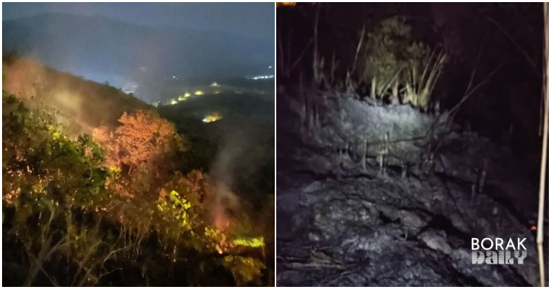

- Enviromental Monitoring, Solutions
A Case Study of Broga Hills – The Role of Earth Observation Satellites in Environmental Monitoring
- October 29, 2024
- By Media GeoAI
Broga Hills has long been a treasured destination for nature enthusiasts, a place where the city’s noise fades into quiet trails and sweeping green views. Located on the border of Selangor and Negeri Sembilan, it has been an escape for weekend hikers and a sanctuary for local wildlife.
Yet in March 2024, this beloved landscape faced a devastating setback: a fire, fueled by dry spells and high winds, tore through over two hectares of forest, transforming its lush scenery into a stark expanse of scorched earth. The fire spread rapidly due to strong winds, forcing firefighters to climb for up to 30 to 45 minutes as the affected area was inaccessible by vehicle.
The fire marked a turning point, showing how vital environmental monitoring and rapid response have become in preserving our natural spaces and supporting post-disaster recovery.
Environmental Impact Assessment: Leveraging Satellite Imagery for Damage Analysis
The fire left visible scars across the hills, transforming Broga’s once-verdant landscapes into charred expenses. This transformation was strikingly captured by satellite imagery, which revealed the extent of ecological disruption. From space, the scale of devastation was undeniable, illustrating the profound impact that climate events and wildfires have on biodiversity and soil health.
These images have become critical tools for environmental authorities, conservationists, and local communities, offering essential insights for assessing and planning targeted restoration strategies.

Restoration Initiatives Backed by Satellite Data
Following the fire, substantial restoration projects have been initiated to rehabilitate Broga’s landscape. This has included reforestation efforts led by local communities and environmental organizations, replanting native tree species and other vegetation to re-establish natural ecosystems.
Satellite imagery has proven invaluable in identifying areas most in need of replanting and tracking reforestation progress.
Restoration and Rehabilitation Measures:
- Reforestation Projects
Local communities and environmental groups have led tree-planting initiatives in the most affected areas, supported by satellite data pinpointing the zones in need of urgent attention.
- Soil Rehabilitation
The fire severely impacted soil quality, slowing the natural recovery process. Soil rehabilitation strategies have therefore been adopted, including the addition of organic matter and nutrients to stimulate new vegetation growth. - Wildlife Conservation
With habitats destroyed and wildlife displaced, conservation efforts aim to restore natural habitats. Safe zones and designated feeding areas have been established to facilitate the return of local fauna.
The Role of Advanced EO Technology and Geospatial AI
The monitoring of Broga Hills’ recovery is bolstered by Earth observation satellites equipped with high-resolution imaging and multi-spectral analysis. These capabilities offer detailed data that aids in identifying subtle changes in vegetation health, soil degradation, and other key environmental indicators.
For instance, UzmaSAT-1, an EO satellite designed for climate and environmental monitoring, provides real-time data that informs local stakeholders and environmental agencies on recovery progress, allowing for adjustments based on current data.
Geospatial AI further enhances EO satellite data processing through machine learning algorithms that detect patterns and trends over time.
Timelapse clip – Broga 2019-2021-March 2024 – October 2024
In Broga Hills, this technology can analyze recovery trends, identifying areas of growth while flagging zones that require additional restoration efforts. By monitoring real-time changes, geospatial AI provides proactive insights to mitigate risks of erosion, invasive species, or further environmental degradation, allowing stakeholders to take preventive actions and refine their strategies for better ecosystem outcomes.
Broga Hills: A Model for a Data-Driven Approach to Conservation
The response to the Broga Hills fire shows the power of data and technology in environmental stewardship. Satellite imagery and geospatial AI are now vital tools in monitoring, restoring, and protecting fragile landscapes.
This approach to environmental monitoring, leveraging satellite technology and advanced analytics, is critical to achieving sustainable conservation goals. Through data-driven decision-making and innovative satellite applications, we can safeguard fragile ecosystems and ensure that natural landmarks like Broga Hills are preserved for future generations.
Share the Post:Related Posts
Looking for Answers to Your Industry Issues?
If you want us to share more about space technology, EUDR, EO satellite applications, and industry related, feel free to drop your contact and experience the technology yourself.